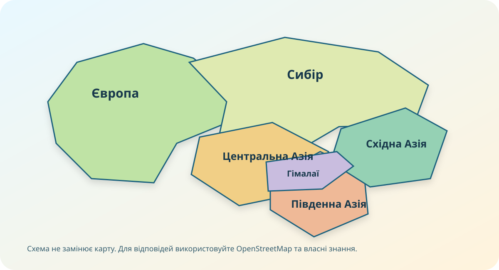

1. Ідентифікація
Робота заблокована до заповнення всіх трьох полів.
2. Карта доказів

Схема — лише орієнтир. Просторові відповіді перевіряйте на реальній карті.
Діагностична робота №6. Тут важливо не вгадувати факт, а читати карту, поєднувати дані й пояснювати причинні зв’язки між положенням, тектонікою, кліматом, водами, природними зонами, населенням та екологічними проблемами.
Робота заблокована до заповнення всіх трьох полів.

Схема — лише орієнтир. Просторові відповіді перевіряйте на реальній карті.